Data Model for Historical GIS: CHGIS Time Series (2003) PDF White Paper
The original CHGIS Relational Database Version 3 (2005) is archived here: MySQL and Access
The current database for CHGIS placenames is the Temporal Gazetteer : MariaDB
1. Objective
The main task of the CHGIS relational database was to create unique records for all of the administrative units down to the county (xian) level that were part of the historical dynasties of China from the time of unification (222 BCE) to the end of the dynastic period (1911 CE), and to provide documentation of the sources used to create each record.
In addition to the field administration units (documented in Chinese histories), settlements below the county seat level are included for the years 1820 and 1911.
Queries to the CHGIS database were intended to allow users to:
- look up administrative unit and places by their placenames
- find the historical placename records that existed during a particular year
- filter these queries by feature type
- find related units in the administrative hierarchy
2. Overview:
As administrative changes take place over time, the administrative units undergo various changes, including: name changes, changes in boundary or location, and changes in feature type. The primary task of the data model is to keep track of these changing attributes and allow for attributes that are valid for specified dates to be retrieved by the user. In addition, the database must keep track of the previous and subsequent units that comprise the territory that has been affected by a change. This temporally searchable administrative change database, extended backwards in time through Dynastic periods, is the key concept behind the CHGIS Spatio-Temporal Database Design.
2.1 Placename and Feature Type Changes
Let us examine each of the types of change being tracked in turn, beginning with name changes. Chinese placenames are typically considered to have two components, tong ming and zhuan ming. The tong ming refers to the given toponym, while the zhuan ming plays the role of an identifier. This identifier is the equivalent of a feature type. For example, the Chinese river Yangzi Jiang, would be said to have Yangzi as tong ming and Jiang as zhuan ming. In other words, "Yangzi" serves as the given toponym, and "Jiang" (i.e. River) acts as the feature type. Indeed, "Yangzi" is so famous in Chinese that it can be used meaningfully by itself, even though the correct placename will be listed in reference works in a bound form with the feature type "Jiang."
The same phenomenon occurs in English when we attempt to classify placenames, because there is some ambiguity as to whether the identifier is part of a bound form or not. We always refer to Fort Dearborn, or Fort Knox, never Dearborn or Knox, but we can say either Bernalillo County or simply Bernalillo, without causing any confusion.
In Chinese, generally speaking, the zhuan ming are always included for townships, counties, and cities, but can be occasionally dropped for prefectures and provinces. The use of zhuan ming for rural townships, villages and other settlements is somewhat arbitrary. For our purposes, a change in the zhuan ming constitutes a name change, because such a change almost always reflects a change in the administrative role, ie. feature type, of the unit in question. Therefore the change of a name from Chongde Xian to Chongde Zhou and back to Chongde Xian would be recorded in three unique records in the database, as shown in the following illustration:
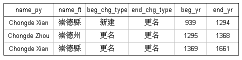
Unique records would also be created if the given toponym changed, as seen in the following example, where Chongde Xian changed its name to Shimen Xian in the year 1661:
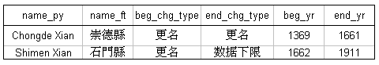
2.2 Boundary Changes
The second type of change being tracked are boundary changes. Of course boundary changes only apply to administrative units which are represented as polygon objects that change over time: prefectures, provinces, dynasties & regimes. When a boundary change event occurs, the administrative unit in question either gains or loses part of its territory. In the CHGIS tables, we keep track of these changes in the columns beg_chg_type (Begin Change Type) and end_chg_type (End Change Type). These mean in essence:
- beg_chg_type = the event as a result of which this record was created
- end_chg_type = the event as a result of which this record ceased to be valid
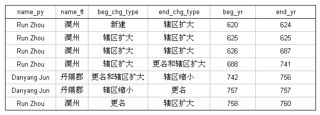
2.3 Point Location Changes
The majority of records in the CHGIS database (including more than 20,000 towns and villages and thousands of counties) are not represented by polygons. This is due to the lack of accurate historical evidence about their areas of jurisdiction. Although these records do not have polygon objects to represent them in GIS, they all have point objects. Therefore a third category of change being tracked in the database are changes in point locations. For practical purposes, this includes only county level and higher points which have a change in the location of the administrative seat. In other words, when a particular county, such as Lin'an Xian, moved its administrative office from one location to a new location, this results in two unique records in the database:
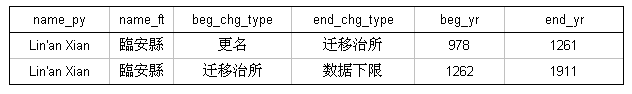
The same method is used to track changes in administrative seat locations for higher level units, such as prefectures, provinces, and regimes. These higher level units are represented by both administrative areas (polygons) and administrative seats (points) in separate GIS layers. In other words, the historical instance record for a particular place, such as Fujian Lu, actually refers to two different GIS objects, one polygon and one point. Consider the following example, which shows a series of historical instances for Fujian Lu. Please note the two additional fields on the right hand side of the table, bou_id (boundary object ID) and pt_id (point object ID).
In each of the rows you see a unique point object ID. The reason for this is that each of these changes reflects an event of "administrative seat location moved." Each of the GIS point objects representing these moves has specific begin and end dates for its period of validity. Note also the pres_loc (present location) field, which indicates that in the year 1125 the administrative office of Fujian Lu moved from a present-day location near Laocheng, Fuzhou Shi to another location further inland, Jian'ou Xian. In the year 1128, the seat of Fujian Lu was once again located at Fuzhou Shi, Laocheng. Even when the first and third locations are identical, they exist as two separate point objects in the GIS layer, because they each have unique begin and end dates. They are identical spatially, but they do NOT overlap temporally.
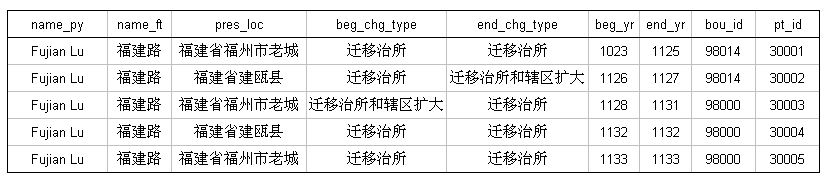
Also note the field bou_id (boundary object ID) which is not unique for the five instances. This indicates that the first two records (ID# 98014) are represented by a different polygon from the following three records (ID# 98000). In the year 1128, at the same time the administrative seat was moved, the jurisdictional area increased. The polygons (actually a group of polygons regionalized as one object in GIS to account for coastal islands) that represent the two periods look almost the same, but there is a difference. In 1128, Fujian Lu expanded to include Penghu Island (circled in red).
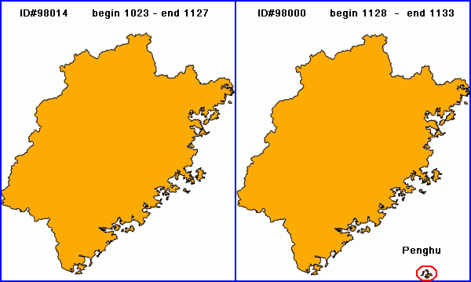
3. Relational Database
Up to this point, all of the information we have been discussing is recorded in a single table, referred to as the "Historical Instance Table," or simply the "Main Table." Each row in the Main Table represents a single historical instance, which CHGIS defines as a record describing a span of time during which the placename, administrative type, and associated spatial objects all remain unchanged. The span of time for each historical instance is defined by specific begin and end dates (the unit of measure being one year). Should any changes occur, such as those described above, a new record is added to the Main Table to reflect the new historical instance.
There are several other tables in the relational database model, the most essential of which are the Source Notes Table, Part Of Table, and GIS Info Table.
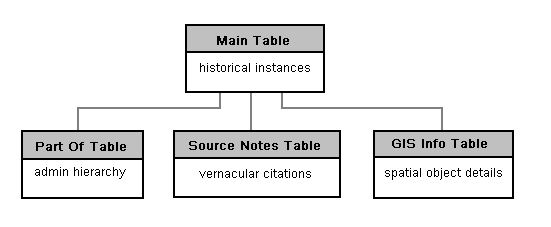
3.1 Source Notes Table
The Source Notes Table contains source citations, direct quotes, and commentaries for all of the CHGIS Time Series records in Chinese characters. We do not plan to attempt a translation of the notes, which have been compiled by the senior researchers at Fudan University's Center for Historical Geography (CHG). The copyright for all the notes and commentaries are held by the individual scholars and by the CHG, and anyone wishing to make use of them in any form, are required to obtain permission directly from CHG.
For any given Time Series record in the Main Table links to the source notes are found in the two fields called bou_note_id (boundary note ID#), and pt_note_id (point note ID#). As explained in the preceding section, each row in the Main Table can be represented by both a polygon (for jurisdictional area) and a point location (for administrative seat). The source notes provide separate, detailed citations and commentaries on the boundary and point changes.
For boundary changes, the bou_note_id for a given record in the Main Table can be looked up in the Source Notes Table. Point location changes are also linked via the pt_note_id. In the case of prefecture or higher level units, there will be both boundary and point change source notes. For county level units there will be source notes for point location changes only, and the bou_note_id field will be empty.
The source notes may also be browsed online, using the CHGIS placenames search tool. Note that only the time series records will have related source notes, and that records with identical begin and end dates will not.
3.2 Part Of Table
The Part Of Table records the parent jurisdiction for each of the administrative units in the Main Table, from the county level up to the top level. This works based on a principle of containership, where a given CHILD unit is listed as part of a particular PARENT unit for a specific period of time. For example, a particular county is listed in the Part Of Table as CHILD, and the immediately superior unit which had jurisdiction over the county is listed as the PARENT. In the Part Of Table, the placenames and unique system ID #s are provided for both the CHILD unit (CHILD_ID, CHILD_NMPY) and the PARENT unit (PRT_ID, PRT_NMPY). In the following example Youxi Xian is shown as being Part Of Guiji Jun, during the years 14-22. Guiji Jun is shown as being Part Of Xinmang during the years 9-23.
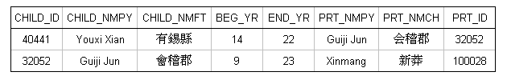
In the example above, the period of time that Guiji Jun was Part Of Xinmang begins earlier and ends later than the period of time that Youxi Xian was Part Of Guiji Jun. This is a case of temporal containership. Temporal relationships between objects that change over time closely resemble spatial relationships. Consider the following illustration:
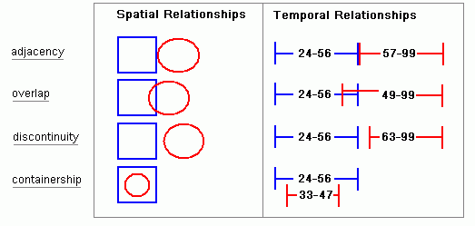
The right side of the illustration helps us to visualize the ways in which our dated historical instances co-exist on the temporal plane. Records that follow one another in sequence are adjacent. If the end date of a record is later than the begin date of another record, then they must overlap. If the there is a gap between the end date of one record and the begin date of another record, they must be discontinuous. And when the valid span of time for a particular record lies completely within that of another record it is an example of containership.
When dealing with the historical places recorded in CHGIS, we need to keep in mind that Parent Units change asynchronously from their Children. That means that a Parent Unit might expand, contract, change its name, or the location of its capital seat within the span of time for which a Child Unit is valid. From the theoretical perspective, the temporal divisions of Parent and Child records might look something like the following:
Taking into consideration the illustration above, we can see that it is not possible to simply list one Part Of relationship for the Child Unit that began at time 23 and ended at time 92. Because the Parent Unit itself changed three times during that period, we would need to capture the relationships to all of the temporally overlapping parent records, in this case it requires four unique rows in the Part Of Table:
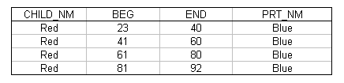
It is very important to note that the first Part Of record begins at time 23, because we are indicating that the Child Unit, Red, was within the jurisdiction of the Parent, Blue, so the begin date must match the begin date of the Child. However, the subsequent two changes of the Parent, Blue, occurred at times temporally contained by the Child Unit's historical instance, and therefore the begin and end dates match those of the contained parents. Similarly the end date of the Child Unit is used as the final date. As a rule, the dates of relationship rows must match the Begin and End dates of the Child, except in cases where the Parent Unit's dates are temporally contained within the valid period of the Child Unit.
Let's take the above example and see how it is actually implemented in the CHGIS Part Of Table. The example shown below is for Fu Zhou, which has an historical instance recorded in the Main Table valid from 758 CE and ending in 932 CE.
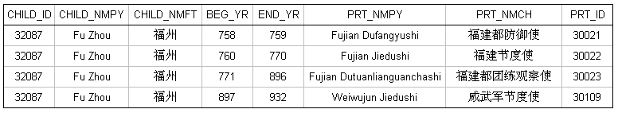
As you can see, for the single historical instance of Fu Zhou (758 CE to 932 CE), there were four temporally overlapping Parent Instances. The first relationship row matches the Begin Date of the Child, and the last relationship row matches the End Date of the Child, while the intervening relationships match the dates of the temporally contained Parents.
3.3 GIS Info Table
Information that is specific to each spatial object in GIS--such as the x - y coordinates of points, the source or basemap used for the spatial object, the object type, and the names of the editors who worked on the data--are all kept in the GIS Info Table. The GIS Info Table is compiled directly from the GIS datasets, and allows the user to browse and search all the spatial objects in one table, rather than opening up each of the GIS layers separately.
This table is linked from the Main Table using the bou_id (boundary object ID) for Polygons and pt_id (point object ID) for Points. As explained above, the historical instance recorded in a single row of the Main Table may have a Point ID, or both a Point ID and a Boundary ID. These IDs can be looked up in the GIS Info Table to find specific information about the spatial objects which represent each historical instance, including the filename of the original GIS layer that contains the spatial object. In short, the GIS Info Table acts as a linktable between the Main Table and the GIS layers.